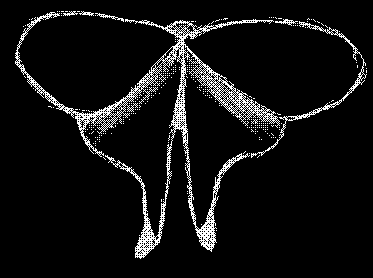

This is meant to be a gathering place for all of my works. It is meant to be a draft for a future portfolio of sorts.
I am currently studying linguistics at Dokuz Eylül University.
My public programming projects are kum, startpage, chimudownloader and, a game I lost all the files of Dopamine. I have also contributed code to veer.
My Wikipedia contributions can be found here.
I occasionally make some music and put it up on SoundCloud or Online Sequencer.
I wrote an initial draft for a conlang called Shivi.
